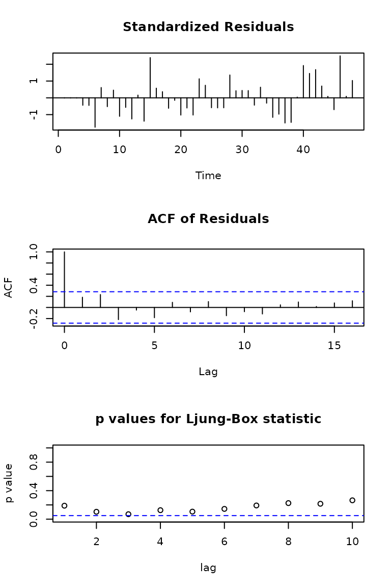
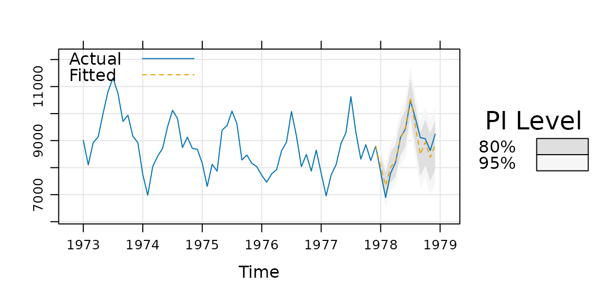

xyplot.lm(): Linear model diagnostics
tactile provides an xyplot() method for lm
objects – usually generated with stats::lm() or
stats::glm(). It provides the same type of diagnostic plots
that stats::plot.lm() covers, with some small modifications
This method is provided so that a user may use lattice graphics
throughout out a
document, say for a lab report, and produce consistent graphic
material that can be changed on a general level (for instance by using
lattice.options()).
Usage
We fit a simple linear model
fit <- lm(Sepal.Length ~ Sepal.Width, data = iris)Here, we fist use the default option and plot the diagnostics using
stats::plot()
Plot diagnostics with stats::plot.lm().
Or instead use the method provided by tactile.
Plot diagnostics with xyplot.lm().
You will see that the results are similar. The benefits, however, of
using xyplot.lm() from tactile are that
- handling of plot margins is much improved,
- the plots are returned as a list of trellis objects (that can be updated),
- general plot settings from
latticeare respected (mostly), and - you no longer have to specify
par(mfrow = c(2, 2)). The plots are arranged viagridExtra::grid.arrange()automatically and argumentsnrowandncolhave been made accessible in thexyplot.lm()call to enable manual specifications.
xyplot.Arima: ARIMA Model Diagnostics
This function is similar to xyplot.lm() but is modeled
after stats::tsdiag(). First, we look at the output from
the original.

To use the method from tactile, we just call xyplot() on
the model fit. The most prominent difference here is that we’ve added a
Q-Q plot of the standardized residuals as well, but also that we’re
correcting the Ljung–Box test to account for the fact that we’ve fit a
model.
xyplot(fit)
xyplot.forecast(): Plotting forecasts with tactile
Robert Hyndman’s excellent forecast package has built-in functions for plotting forecasts. These have been reworked to use lattice graphics in tactile, and also try to place the forecasts on the time scale of the original data (if such is provided).
For this example, we user USAccDeaths, a time series
giving the monthly totals of accidental deaths in the USA. We begin by
separating the series into a training and test set.
library(forecast)
#> Registered S3 method overwritten by 'quantmod':
#> method from
#> as.zoo.data.frame zoo
train <- window(USAccDeaths, c(1973, 1), c(1977, 12))
test <- window(USAccDeaths, c(1978, 1), c(1978, 12))Then we fit the model and plot the results.
fit <- arima(train, order = c(0, 1, 1), seasonal = list(order = c(0, 1, 1)))
fcast1 <- forecast(fit, 12)
xyplot(fcast1, test,
grid = TRUE, auto.key = list(corner = c(0, 0.99)),
ci_key = list(title = "PI Level")
)
A so called fan plot can be achieved by increasing the number of
prediction intervals in the call to forecast. We also
switch to a separate color palette by using the ci_pal
argument.
# A fan plot
fcast2 <- forecast(fit, 12, level = seq(0, 95, 10))
xyplot(fcast2, test, ci_pal = heat.colors(100))